扉页
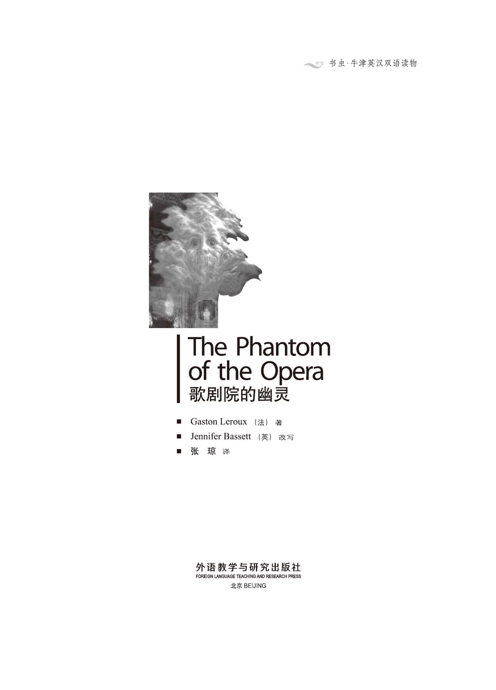
版权页
京权图字：01-97-0357
Originally published by Oxford University Press, Great Clarendon Street, Oxford. © 1992 This edition is licensed for sale in the People's Republic of China only and not for export therefrom.
‘Oxford' is a registered trademark of Oxford University Press.
只限中华人民共和国境内销售，不包括香港特别行政区、澳门特别行政区及台湾省。不得出口。
图书在版编目（CIP）数据
歌剧院的幽灵：英汉对照／（法）勒鲁（Leroux, G.）著；（英）巴西特（Bassett, J.）改写；张琼译．— 北京：外语教学与研究出版社，1998.3（2014.12 重印）
（书虫·牛津英汉双语读物）
书名原文：The phantom of the opera
ISBN 978-7-5600-1298-8
Ⅰ．①歌… Ⅱ．①勒…②巴…③张… Ⅲ．①英语—汉语—对照读物②长篇小说—法国—近代 Ⅳ．①H319.4:I
中国版本图书馆CIP数据核字（2012）第319148号
出版人： 蔡剑峰
责任编辑：周 晶
封面设计：孙莉明
出版发行：外语教学与研究出版社
社 址：北京市西三环北路19号（100089）
网 址：http://www.fltrp.com
版 次：1998年3月第1版
书 号：ISBN 978-7-5600-1298-8
* * *
凡侵权、盗版书籍线索，请联系我社法律事务部
举报电话：(010)88817519 电子邮箱：banquan@fltrp.com
法律顾问：立方律师事务所 刘旭东律师
中咨律师事务所 殷 斌律师
简 介
简 介
你相信有鬼吗？当然不会相信。我们喜欢谈论鬼，喜欢讲述关于鬼的故事，但我们并非真的相信有鬼……是不是？
1880年，在巴黎歌剧院发生了一件不可思议的事情：一个舞蹈演员在黑暗的走廊里遇见了鬼。它穿越墙壁来到她的面前，它的脸上没有眼睛；一个舞台工人看见一个穿黑色晚礼服的男人，但他却有一个死人般的头颅，黄色的面孔，并且没有鼻子；人们听到另一个房间里有声音，而那个房间却是空的。
这就是歌剧院的幽灵……
一个名叫盖斯顿·勒罗克斯的法国人最早创作了这个关于歌剧院的幽灵的故事。他的书很受欢迎，1925年它被拍成一部美国无声电影，由著名演员朗·钱尼扮演幽灵。从那以后，已经出现了许多其他的电影和戏剧，以及最近由安德鲁·劳埃德·韦伯创作的著名的英国音乐剧。
本书作者詹妮弗·巴塞特是一位经验丰富的教师和作家。她生活和工作在英国西南部的德文郡。
目录
1 The dancers
1
The dancers
'Quick! Quick! Close the door! It's him!' Annie Sorelli ran into the dressing-room, her face white.
One of the girls ran and closed the door, and then they all turned to Annie Sorelli.
'Who? Where? What's the matter?' they cried.
'It's the ghost!' Annie said. 'In the passage. I saw him. He came through the wall in front of me! And... and I saw his face!'
Most of the girls were afraid, but one of them, a tall girl with black hair, laughed.
'Pooh!' she said. 'Everybody says they see the Opera ghost, but there isn't really a ghost. You saw a shadow on the wall.' But she did not open the door, or look into the passage.
'Lots of people see him,' a second girl said. 'Joseph Buquet saw him two days ago. Don't you remember?'
Then all the girls began to talk at once.
'Joseph says the ghost is tall and he wears a black evening coat.'
'He has the head of a dead man, with a yellow face and no nose...'
'...And no eyes—only black holes!'
Then little Meg Giry spoke for the first time. 'Don't talk about him. He doesn't like it. My mother told me.'
'Your mother?' the girl with black hair said. 'What does your mother know about the ghost?'
'She says that Joseph Buquet is a fool. The ghost doesn't like people talking about him, and one day Joseph Buquet is going to be sorry, very sorry.'
'But what does your mother know? Tell us, tell us!' all the girls cried.
'Oh dear!' said Meg. 'But please don't say a word to anyone. You know my mother is the doorkeeper for some of the boxes in the Opera House. Well, Box 5 is the ghost's box! He watches the operas from that box, and sometimes he leaves flowers for my mother!'
'The ghost has a box! And leaves flowers in it!'
'Oh, Meg, your mother's telling you stories! How can the ghost have a box?'
'It's true, it's true, I tell you!' Meg said. 'Nobody buys tickets for Box 5, but the ghost always comes to it on opera nights.'
'So somebody does come there?'
'Why, no!... The ghost comes, but there is nobody there.'
The dancers looked at Meg. 'But how does your mother know?' one of them asked.
'There's no man in a black evening coat, with a yellow face. That's all wrong. My mother never sees the ghost in Box 5, but she hears him! He talks to her, but there is nobody there! And he doesn't like people talking about him!'
But that evening the dancers could not stop talking about the Opera ghost. They talked before the opera, all through the opera, and after the opera. But they talked very quietly, and they looked behind them before they spoke.
When the opera finished, the girls went back to their dressing-room. Suddenly, they heard somebody in the passage, and Madame Giry, Meg's mother, ran into the room. She was a fat, motherly woman, with a red, happy face. But tonight her face was white.
'Oh girls,' she cried. 'Joseph Buquet is dead! You know he walks a long way down, on the fourth floor under the stage. The other stage workers found his dead body there an hour ago—with a rope around his neck!'
'It's the ghost!' cried Meg Giry. 'The ghost killed him!'
ghost n. spirit of a dead person appearing to sb. still living. 鬼；幽灵。
passage n a usu. narrow way through; opening. （通常为狭窄的）通道；通路；小径。
shadow n. area of shade, dark shape, thrown on the ground, a wall, floor, etc. by sth. which cuts off the direct rays of light. 影；阴影。
fool n. (derog.) a silly person. （贬义）蠢人；傻子。
doorkeeper n. person on duty or on guard at a door or other entrance. 门房；守门人。
box n. separate compartment, with seats for several persons, in a theatre, concert hall, etc. （戏院、音乐厅等的）包厢。
rope n. (a piece of) strong thick cord made by twisting. 绳索。
1．舞蹈演员们
1．舞蹈演员们
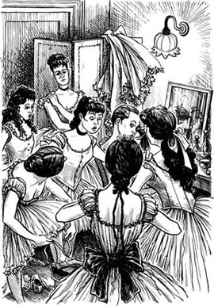
“快！快！关门！是他！”安妮·索雷丽跑进化妆室，脸色苍白。
一个姑娘跑过去把门关上，然后她们都转向安妮·索雷丽。
“谁？在哪里？发生了什么事？”她们叫道。
“有鬼！”安妮说，“在走廊上，我看到了他。他穿过墙壁来到我的面前！我还……还看到了他的脸！”
绝大多数姑娘都很害怕，但她们中的一个高个子的黑发姑娘却大笑起来。
“呸！”她说，“每个人都说他们看到了这个歌剧院的幽灵，但是这里其实并没有鬼。你看见的只是墙上的影子。”但是她没有去把门打开，也没有到走廊上去看个究竟。
“许多人都看到过他，”又一个姑娘说，“约瑟夫·比凯两天前也看到过他，你们难道不记得了？”
随后所有的姑娘们立即开始谈论此事。
“约瑟夫说这幽灵是个高个子，穿着黑色的晚礼服。”
“他有一个死人般的头颅，黄色面孔，没有鼻子……”
“……而且没有眼睛——只是黑洞！”
接着娇小的梅格·吉里第一次开口说话了：“不要谈论他。他不喜欢这样。我妈妈告诉我的。”
“你妈妈？”黑头发的姑娘问，“关于这幽灵的事儿，你妈妈都知道些什么？”
“她说约瑟夫·比凯是个傻瓜。这幽灵不喜欢人们谈论他，总有一天约瑟夫·比凯会后悔的，会非常后悔的。”
“但是你妈妈都知道些什么？告诉我们，告诉我们！”所有的姑娘都叫道。
“哦，天啊！”梅格说，“但是请不要跟任何人说一个字。你们知道我妈妈是歌剧院一些包厢的看门人。瞧！五号包厢就是这幽灵专用的！他在那个包厢看歌剧，并且有时候会留下一些鲜花给我妈妈！”
“这幽灵还有包厢！而且在包厢里留下鲜花！”
“哦，梅格，你妈妈在给你讲故事吧！幽灵怎么会有包厢呢？”
“这是真的，这是真的，我告诉你们！”梅格说，“没有人买五号包厢的票，但是这个幽灵却总是在晚上演歌剧时到包厢里来。”
“确实有人在那儿啦？”
“噢，不！……只有幽灵来，但是那里一个人也没有。”
舞蹈演员们看着梅格。“但是你妈妈是怎么知道的？”其中一个问道。
“这里根本没有穿黑色晚礼服、长着黄色面孔的男人。那都是瞎扯。我妈妈从来没有在五号包厢里看到过这个幽灵，但是她听到过！他跟她说话，然而里面却没有人！而且他不喜欢人们谈论他！”
但是那个晚上舞蹈演员们却无法不谈论歌剧院的幽灵。她们在歌剧开演前谈论着，在歌剧整个演出过程中谈论着，在歌剧演出结束后还谈论着。但是她们谈话的声音很小，而且她们在说话前总要先看看她们的身后的动静。
当歌剧演出结束的时候，姑娘们回到了她们的化妆室。突然，她们听到走廊上有动静，接着吉里夫人，也就是梅格的母亲，跑进了房间。她是一个肥胖的、慈母般的妇人，有一张红扑扑的、快乐的脸。但是今晚她的脸色却是苍白的。
“哦，姑娘们，”她叫道，“约瑟夫·比凯死了！你们知道他要一直往下走很深，走到舞台底下的第4层。别的舞台杂工一个小时以前在那里发现了他的尸体——有一根绳子绕在他的脖子上！”
“是幽灵！”梅格·吉里叫道，“是那个幽灵杀死了他！”
2 The directors of the Opera House
2
The directors of the Opera House
The Opera House was famous, and the directors of the Opera House were very important men. It was the first week of work for the two new directors, Monsieur Armand Moncharmin and Monsieur Firmin Richard. In the directors' office the next day, the two men talked about Joseph Buquet.
'It was an accident,' Monsieur Armand said angrily. 'Or Buquet killed himself.'
'An accident?... Killed himself?' Monsieur Firmin said. 'Which story do you want, my friend? Or do you want the story of the ghost?'
'Don't talk to me about ghosts!' Monsieur Armand said. 'We have 1,500 people working for us in this Opera House, and everybody is talking about the ghost. They're all mad! I don't want to hear about the ghost, OK?'
Monsieur Firmin looked at a letter on the table next to him. 'And what are we going to do about this letter, Armand?'
'Do?' cried Monsieur Armand. 'Why, do nothing, of course! What can we do?'
The two men read the letter again. It wasn't very long.
To the new directors
Because you are new in the Opera House, I am writing to tell you some important things. Never sell tickets for Box 5; that is my box for every opera night. Madame Giry, the doorkeeper, knows all about it. Also, I need money for my work in the Opera House. I am not expensive, and I am happy to take only 20,000 francs a month. That is all. But please remember, I can be a good friend, but a bad enemy.
O. G.
'Don't sell tickets for Box 5! 20,000 francs a month!' Monsieur Armand was very angry again. 'That's the best box in the Opera House, and we need the money, Firmin! And who is this O. G. ,eh? Tell me that!'
'Opera Ghost, of course,' Monsieur Firmin said. 'But you're right, Armand. We can do nothing about this letter. It's a joke, a bad joke. Somebody thinks we are fools, because we are new here. There are no ghosts in the Opera House!'
The two men then talked about the opera for that night. It was Faust, and usually La Carlotta sang Margarita. La Carlotta was Spanish, and the best singer in Paris. But today, La Carlotta was ill.
'Everybody in Paris is going to be at the opera tonight,' said Monsieur Armand, 'and our best singer is ill. Suddenly! She writes a letter to us just this morning—she is ill, she cannot sing tonight!'
'Don't get angry again, Armand,' Monsieur Firmin said quickly. 'We have Christine Daaé, that young singer from Norway. She can sing Margarita tonight. She has a good voice.'
'But she's so young, and nobody knows her! Nobody wants to listen to a new singer.'
'Wait and see. Perhaps Daaé can sing better than La Carlotta. Who knows?'
mad adj. ill in the mind. 精神错乱的；疯的。
enemy n. a person who hates or dislikes another person. 敌人；仇敌。
joke n. anything said or done to cause laughter or amusement. 笑话；玩笑。
perhaps adv. it may be; possibly. 可能，也许。
2．歌剧院的经理们
2．歌剧院的经理们
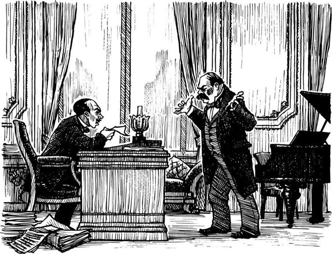
歌剧院很著名，而歌剧院的经理们也都是些非常显要的人物。这是两位新经理阿曼德·蒙沙曼先生和弗明·理查德先生上任的第一个星期。第二天，在经理办公室里，这两位先生谈起了约瑟夫·比凯的事。
“这是个意外事故，”阿曼德先生气愤地说，“要不然比凯就是自杀的。”
“意外事故？……自杀？”弗明先生说，“你想要听哪一类故事，我的朋友？或者说你想听一个关于幽灵的故事？”
“不要跟我谈关于幽灵的事！”阿曼德先生说，“这个歌剧院里有1,500人在为我们工作，而每个人都在谈论关于幽灵的事。他们都疯了！我不想听到幽灵的事，行不行？”
弗明先生看着他身旁桌子上的一封信。“那我们该拿这封信怎么办，阿曼德？”
“拿它怎么办？”阿曼德先生叫道，“噢，当然是什么也不做了！我们又能做些什么呢？”
两位先生又读了一遍这封信。信并不很长。
致新任经理们
因为你们是歌剧院的新任经理，所以我写信告诉你们一些重要的事情。不要出售五号包厢的票；那是我观看每一场晚场歌剧的包厢。吉里夫人，那位看门人，知道这一切。除此之外，我还需要在歌剧院工作的工钱。我要价并不高，一个月拿两万法郎我就感到满足了。就这些。但是请记住，我会是一个好朋友，也会是一个死对头。
O. G. （注：O. G. 即Opera Ghost的缩写。）
“不要出售五号包厢的票！两万法郎一个月！”阿曼德先生又来气了，“那是歌剧院最好的包厢，而且我们需要钱，弗明！谁是这个O. G. 啊？告诉我！”
“自然是歌剧院的幽灵了，”弗明先生说，“但你是对的，阿曼德。我们绝对不能按照信上说的那么做。这是一个玩笑，一个恶毒的玩笑。有人认为我们是傻瓜，因为我们是新来的。歌剧院里根本就没有幽灵！”
然后这两位先生就谈论起当晚的歌剧来。当晚上演的歌剧是《浮士德》，通常由拉·卡洛塔演唱玛格丽塔。拉·卡洛塔是西班牙人，是巴黎最好的歌唱家。但是今天，拉·卡洛塔却病了。
“今晚巴黎的每个人都会到歌剧院来，”阿曼德先生说，“而我们最好的歌唱家却病了。突然间就病了！她今天上午方才写信给我们——她病了，她今晚不能演唱了！”
“不要再生气了，阿曼德，”弗明先生急忙说，“我们有克里斯廷·达埃，那个年轻的挪威歌唱家。她今晚可以演唱玛格丽塔那个角色。她有一副好嗓子。”
“但是她太年轻了，而且没有人知道她！没有人想听一个新手的演唱。”
“等着瞧吧。也许达埃会比拉·卡洛塔唱得更好。谁知道呢？”
3 Christine Daaé
3
Christine Daaé
Monsieur Firmin was right. All Paris talked about the new Margarita in Faust, the girl with the beautiful voice, the girl with the voice of an angel. People loved her. They laughed and cried and called for more. Daaé was wonderful, the best singer in the world!
Behind the stage Meg Giry looked at Annie Sorelli. 'Christine Daaé never sang like that before,' she said to Annie. 'Why was she so good tonight?'
'Perhaps she's got a new music teacher,' Annie said.
The noise in the Opera House went on for a long time. In Box 14, Philippe, the Comte de Chagny, turned to his younger brother and smiled.
'Well, Raoul, what did you think of Daaé tonight?'
Raoul, the Vicomte de Chagny, was twenty-one years old. He had blue eyes and black hair, and a wonderful smile. The Chagny family was old and rich, and many girls in Paris were in love with the young Vicomte. But Raoul was not interested in them.
He smiled back at his brother. 'What can I say? Christine is an angel, that's all. I'm going to her dressing-room to see her tonight.'
Philippe laughed. He was twenty years older than Raoul, and was more like a father than a brother.
'Ah, I understand,' he said. 'You are in love! But this is your first night in Paris, your first visit to the opera. How do you know Christine Daaé?'
'You remember four years ago, when I was on holiday by the sea, in Brittany?' Raoul said. 'Well, I met Christine there. I was in love with her then, and I'm still in love with her today!'
The Comte de Chagny looked at his brother. 'Mmm, I see,' he said slowly. 'Well, Raoul, remember she is only an opera singer. We know nothing about her family.'
But Raoul did not listen. To him, good families were not important, and young men never listen to their older brothers.
There were many people in Christine Daaé's dressing-room that night. But there was a doctor with Christine, and her beautiful face looked white and ill. Raoul went quickly across the room and took her hand.
'Christine! What's the matter? Are you ill?' He went down on the floor by her chair. 'Don't you remember me— Raoul de Chagny, in Brittany?'
Christine looked at him, and her blue eyes were afraid. She took her hand away. 'No, I don't know you. Please go away. I'm not well.'
Raoul stood up, his face red. Before he could speak, the doctor said quickly, 'Yes, yes, please go away. Everybody, please leave the room. Mademoiselle Daaé needs to be quiet. She is very tired.'
He moved to the door, and soon everybody left the room. Christine Daaé was alone in her dressing-room.
Outside in the passage the young Vicomte was angry and unhappy. How could Christine forget him? How could she say that to him? He waited for some minutes, then, very quietly and carefully, he went back to the door of her dressing-room. But he did not open the door, because just then he heard a man's voice in the room!
'Christine, you must love me!' the voice said.
Then Raoul heard Christine's voice. 'How can you talk like that? When I sing only for you...? Tonight, I gave everything to you, everything. And now I'm so tired.' Her voice was unhappy and afraid.
'You sang like an angel,' the man's voice said.
Raoul walked away. So that was the answer! Christine Daaé had a lover. But why was her voice so unhappy? He waited in the shadows near her room. He wanted to see her lover—his enemy!
After about ten minutes Christine came out of her room, alone, and walked away down the passage. Raoul waited, but no man came out after her. There was nobody in the passage, so Raoul went quickly up to the door of the dressing-room, opened it and went in. He closed the door quietly behind him, then called out:
'Where are you? I know you're in here! Come out!'
There was no answer. Raoul looked everywhere—under the chairs, behind all the clothes, in all the dark corners of the room. There was nobody there.
angel n. (esp. in Christian belief) messenger from God (usu. shown in pictures as a human being in white with wings). （尤指基督教所相信的）天使（在图画中通常作人形，穿白衣，有翼）。
Brittany n. a region of northwestern France. 布列塔尼（法国西北部一地区）。
alone adj. （用作表语）without others. 单独的；一人的。
corner n. (the inside or outside of) the point at which two lines, surfaces, or edges meet. 角落。
3．克里斯廷·达埃
3．克里斯廷·达埃
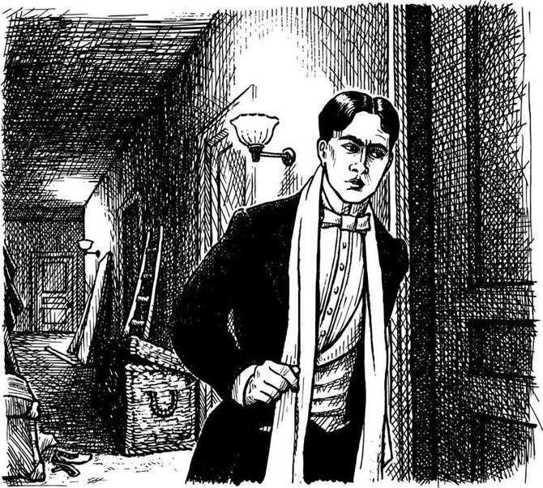
弗明先生说对了。整个巴黎都在谈论歌剧《浮士德》中玛格丽塔的新演唱者，那个有着美妙歌喉的姑娘，那个有着天使一般嗓音的姑娘。人们热爱她。他们笑啊，叫啊，要她再唱一首。达埃的演唱棒极了，她是世界上最好的歌唱家！
在舞台的后面梅格·吉里看着安妮·索雷丽。“克里斯廷·达埃以前从来没有唱得那么好，”她对安妮说，“为什么她今晚唱得这么好呢？”
“或许她已经有了一位新的音乐老师。”安妮说。
歌剧院里的喧闹声持续了很长一段时间。在14号包厢里，菲利普，这位查格尼家族的伯爵，微笑着转向他的弟弟。
“嘿，拉乌尔，你觉得今晚达埃表演得怎么样？”
拉乌尔，这位查格尼家族的子爵21岁。他长着蓝眼睛黑头发，有着迷人的微笑。查格尼家族古老而富有，巴黎的许多姑娘都爱上了这位年轻的子爵，但是拉乌尔对她们却并不感兴趣。
他对他的哥哥报以微笑。“我能说什么呢？克里斯廷是一位天使，就这样。今晚我要去她的化妆室拜访她。”
菲利普笑了。他比拉乌尔大20岁，与其说是拉乌尔的兄长，倒不如说是他的父亲。
“啊，我明白了，”他说，“你恋爱了！但是这是你在巴黎的第一个夜晚，是你第一次来这座歌剧院。你是如何认识克里斯廷·达埃的呢？”
“你还记得四年前，我在布列塔尼海边度假的时候吗？”拉乌尔说，“喔，我在那儿遇见了克里斯廷。当时我就爱上了她，而且今天我还爱着她！”
这位查格尼家族的伯爵看着他的弟弟。“嗯，我明白了，”他一字一顿地说，“噢，拉乌尔，记住，她只是一个歌剧演员。我们对她的家庭一无所知。”
但是拉乌尔听不进去。对他来说，好的家庭并不重要，而且年轻人从来都听不进他们兄长的劝告。
那天晚上克里斯廷·达埃的化妆室里有很多人。但是克里斯廷的身边还有一位医生，而且她美丽的面容带有病色，显得苍白。拉乌尔快步穿过房间，握住她的手。
“克里斯廷！怎么了？你病了吗？”他走到她的座椅旁，“你不记得我了——查格尼家族的拉乌尔，在布列塔尼？”
克里斯廷看着他，她那蓝色的眼睛带着惊恐。她把她的手抽走。“不，我不认识你。请走吧。我身体不太好。”
拉乌尔站起来，他的脸红了。他还没来得及说话，那位医生就急忙抢着说：“对，对，请走吧。各位，请离开这房间。达埃小姐需要安静。她太累了。”
他走向门口，不久所有的人都离开了那个房间，只留下克里斯廷·达埃独自待在她的化妆室里。
在门外的走廊上年轻的子爵感到不悦和扫兴。克里斯廷怎么会忘了他？她怎么会对他说那些话？他等了几分钟，然后，轻轻地，小心翼翼地，他又回到她的化妆室门口。但是他没有把门推开，因为就在这个时候他听到屋里有一个男人的声音！
“克里斯廷，你必须爱我！”那个声音说。
接着拉乌尔听到克里斯廷的声音。“你怎么能那样跟我说话？在我只为你歌唱的时候……？今晚，我把一切都给了你，一切。而现在我太累了。”她的声音显得愁苦而害怕。
“你唱得像一位天使。”那个男人的声音说。
拉乌尔走开了。这么说那就是答案！克里斯廷·达埃有一个情人。但是为什么她的声音如此不悦？他在她房间附近的一处阴影里等着。他要看看她的情人——他的情敌！
大约过了10分钟左右，克里斯廷从她的房间里出来了。她独自一人沿走廊走了过去。拉乌尔等着，但是没有男人跟着她出来。走廊上没有人，于是拉乌尔快步来到化妆室门前，推门而入。他轻轻地把身后的门关上，然后喊道：
“你在哪里？我知道你在这儿！出来！”
没有回答。拉乌尔找遍了所有地方——椅子下面、所有的衣服背后、房间里的每一个阴暗角落。但毫无人影。
4 The Phantom is angry
4
The Phantom is angry
That was Tuesday night. On Wednesday morning Monsieur Armand and Monsieur Firmin were happy men. Paris liked the new Margarita—everything in life was good. The next opera night was Friday. It was Faust again, but this time with La Carlotta singing Margarita.
By Wednesday afternoon they were not so happy. A second letter arrived for them—from O. G.
Why don't you listen to me? I am getting angry. Leave Box 5 free for me. And where are my 20,000 francs? On Friday Daaé must sing Margarita again. She is now the best singer in Paris. La Carlotta cannot sing—she has a very ugly voice, like a toad.
Remember, I am a bad enemy. O. G.
'So, Firmin, is this still a joke?' Monsieur Armand shouted. 'What are we going to do now, eh? Is O. G. the director here, or are we?'
'Don't shout, Armand,' said Monsieur Firmin tiredly. 'I don't know the answers. Let's talk to Madame Giry, the doorkeeper of Box 5. Perhaps she can help us.'
But Madame Giry was not helpful. Madame Giry was not afraid of ghosts, and she was not afraid of directors of Opera Houses.
'People say that you're a friend of the Opera ghost, Madame Giry,' Monsieur Armand began. 'Tell us about him. Some people say he has no head.'
'And some people say he has no body,' said Monsieur Firmin. 'What do you say, Madame Giry?'
Madame Giry looked at the two men and laughed. 'I say that the directors of the Opera House are fools!'
'What!' Monsieur Armand shouted. He stood up, and his face was red and angry. 'Listen to me, woman—'
'Oh, sit down, Armand, and listen,' said Monsieur Firmin. 'Why do you say that, Madame Giry?'
'Because, Monsieur, the Opera ghost is angry with you. When the ghost wants something, he must have it. He is clever and dangerous, this ghost. The old directors before you, they knew that, oh yes. At first they tried to stop him. Then there were many accidents in the Opera House, many strange accidents. And when did these accidents happen? When the ghost was angry! So, the old directors learnt very quickly. The ghost wants Box 5? He can have it every night. The ghost wants money? Let's give the money to him at once. Oh yes, the old directors understood very well.'
'But we are the directors, not the Opera ghost!' Monsieur Armand shouted. He turned to Monsieur Firmin. 'This woman is mad. Why do we listen to her? On Friday night La Carlotta is going to sing Margarita. And you and I, Firmin, are going to watch the opera from Box 5.'
'Well, we can try that, Armand. But we don't want any accidents.'
Madame Giry came nearer to the two men. 'Listen to me,' she said quietly. 'Remember Joseph Buquet? I tell you, the Opera ghost is a good friend, but a bad enemy.'
The two men stared at her. 'Those words,' Monsieur Firmin said slowly, 'why did you say those words, Madame Giry?'
'Because the ghost says them to me. I never see him, but I often hear him. He has a very nice voice—and he doesn't shout at people.'
ugly adj. very unpleasant. 很讨厌的；可怕的。
toad n. rough-skinned, frog-like animal that lives on land except when breeding. 蟾蜍；癞蛤蟆。
shout v. to give a loud cry (of); speak or say very loudly. 喊叫；呼喊。
clever adj. quick at learning and understanding; having a quick, skillful, and able mind or body. 聪明的；灵巧的；能干的；熟练的。
dangerous adj. able to or likely to cause danger. 危险的；招致危险的。
stare v. to look fixedly (at) with wide-opened eyes, as in wonder, fear, or deep thought. 凝视；瞪眼；盯着看。
4．幽灵发怒了
4．幽灵发怒了
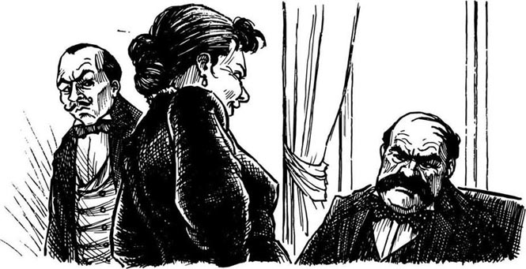
那是星期二的晚上。星期三上午阿曼德先生和弗明先生成了快乐的人。巴黎喜欢玛格丽塔的新演唱者——生活中的一切都是美好的。下一场晚场歌剧是在星期五，又是《浮士德》，但是这一次由拉·卡洛塔演唱玛格丽塔。
到星期三下午他们就不那么快乐了。第二封信送到了他们手中——来自O. G. 的信。
你们为什么不听我的话？我会发怒的。把五号包厢空着留给我。另外我的两万法郎在哪里？星期五达埃必须再次演唱玛格丽塔。她是当今巴黎最好的歌唱家。拉·卡洛塔不能演唱——她的声音非常难听，活像一只癞蛤蟆。
记住，我是一个死对头。O. G.
“如此看来，弗明，这还是一个玩笑吗？”阿曼德先生喊道，“现在我们该做些什么，啊？这里的经理是O. G. ，还是我们？”
“不要喊叫，阿曼德，”弗明先生有气无力地说，“我也不知道如何是好。让我们同吉里夫人，那个5号包厢的看门人谈一谈。或许她能帮助我们。”
但是吉里夫人帮不了什么忙。吉里夫人并不怕幽灵，也不怕歌剧院的经理们。
“人们说你是歌剧院幽灵的朋友，吉里夫人，”阿曼德先生打开了话题，“告诉我们有关他的情况。有人说他没有脑袋。”
“而有人说他没有身体，”弗明先生说，“你说呢，吉里夫人？”
吉里夫人看着这两个人大笑起来。“我说歌剧院的经理们都是傻瓜！”
“什么！”阿曼德先生喊道。他站了起来，满脸通红，面显怒色。“听我说，小娘们——”
“哦，坐下，阿曼德，听她说，”弗明先生说，“你为什么那样说，吉里夫人？”
“因为，先生，这歌剧院的幽灵对你们发怒了。因为这幽灵想要什么，他就必须得到它。这个幽灵是聪明而危险的。你们的那些前任深谙此道，哦，是这样的。刚开始他们试图阻止他。接着在歌剧院里就发生了许多事故，许多意想不到的事故。而那些事故什么时候发生呢？就是这幽灵发怒的时候！所以，那些前任经理们很快就知道该怎么做了。这幽灵想要五号包厢？他可以每个晚上都拥有它。这幽灵想要钱？让我们马上把钱给他。哦对了，那些老经理们领会得很好。”
“但是经理是我们，而不是这歌剧院的幽灵！”阿曼德先生喊道。他转向弗明先生。“这个女人疯了。我们为什么要听她的？星期五晚上由拉·卡洛塔演唱玛格丽塔。而你和我，弗明，到五号包厢里去观看歌剧。”
“好，我们可以那样试试，阿曼德。但是我们不希望发生任何事故。”
吉里夫人走近这两个人。“听我说，”她轻声道：“记得约瑟夫·比凯吗？我告诉你们，这歌剧院的幽灵会是一个好朋友，但也会是一个死对头。”
这两个人凝视着她。“那些话，”弗明先生一字一顿地说，“你为什么说那些话，吉里夫人？”
“因为这幽灵跟我说过那些话。我从来没有见过他，但是我经常听到他说话。他有一副很好的嗓子——而且不对人喊叫。”
5 A letter for Raoul
5
A letter for Raoul
That Wednesday a letter also arrived for the young Vicomte de Chagny. He opened the letter, saw the name at the bottom, and smiled for the first time that day.
Dear Raoul
Of course I remember you! How could I forget you? Meet me on Thursday at three o'clock in the Tuileries Gardens. Don't be angry with me, Raoul, please.
Christine Daaé
Raoul put the letter carefully into his pocket. Angry? How could he be angry with an angel? On Thursday he was in the Tuileries Gardens by two o'clock.
At ten past three he began to feel unhappy. At half past three he wanted to die, or to kill somebody.
And then... she came. She ran through the gardens to him, and in a second she was in his arms.
'Oh, Christine!' he said, again and again. 'Oh, Christine!' They walked through the gardens together and talked for a long time. They remembered their happy weeks in Brittany, four years ago.
'But why did you go away, Christine?' Raoul asked. 'Why didn't you write to me?'
For a minute or two Christine said nothing. Then she said slowly, 'We were so young, you and I. I was just a poor singer from Norway, and you... you were the Vicomte de Chagny. I knew I could never be your wife.'
'But I love you, Christine—'
'No, shh. Listen to me, Raoul, please. I went home to Norway, and a year later, my father died. I was very unhappy, but I came back to France, to Paris. I worked and worked at my singing, because I wanted to be an opera singer. Not just a good singer, but the best opera singer in Paris.'
'And now you are,' Raoul said. He smiled. 'All Paris is at your feet.'
Christine turned her face away and said nothing.
'Christine,' Raoul said quietly. 'I want to ask you a question. Who was the man in your dressing-room on Tuesday night? Tell me, please!'
Christine stopped and stared at him. Her face went white. 'What man?' she whispered. 'There was no man in my dressing-room on Tuesday night.'
Raoul put his hand on her arm. 'I heard him,' he said. 'I listened outside the door and heard a man's voice. Who was he?'
'Don't ask me, Raoul! There was a man's voice, yes, but there was no man in my room! It's true! Oh, Raoul, I'm so afraid. Sometimes I want to die.'
'Who is he? Tell me, Christine, please. I'm your friend, I can help you. Tell me his name!'
'I cannot tell you his name. It's a secret,' whispered Christine. 'I never see him, I only hear his voice. But he is everywhere! He sees everything, hears everything. That's why I didn't speak to you on Tuesday night. He is my music teacher, Raoul. He's a wonderful singer. I sang so well on Tuesday night because of him. I am famous because of him. He is my angel of music! And he says he loves me. How can I leave him?'
bottom n. the base on which something stands; the lowest part, inside or outside. 底端，下部。
whisper v. to speak (words) very quietly, using the breath but not the voice. 低语；耳语；窃窃私语。
secret n. something kept hidden or known only to a few. 秘密。
5．一封致拉乌尔的信
5．一封致拉乌尔的信
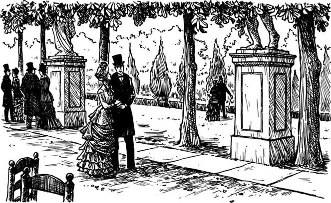
那个星期三也有一封信到了年轻的查格尼家族的子爵手里。他打开信，看到信末尾的署名，露出了那天的第一个微笑。
亲爱的拉乌尔：
我当然记得你！我怎么会忘了你呢？星期四下午3点到杜伊勒利花园来见我。请不要生我的气，拉乌尔。
克里斯廷·达埃
拉乌尔小心翼翼地把这封信放进他的衣服口袋里。生气吗？他怎么会生一位天使的气呢？星期四还不到两点他就到了杜伊勒利花园。
3点10分的时候他开始感到不快。到了3点半的时候他想死掉，或者杀人。
随后……她来了。她穿过花园奔向他，一下子扑到他怀里。
“哦，克里斯廷！”他一遍又一遍地说，“哦，克里斯廷！”他们一同漫步着穿过花园并且谈了很长时间。他们回忆起四年前在布列塔尼的快乐时光。
“但是你为什么离开那里了，克里斯廷？”拉乌尔问，“你为什么不给我写信？”
克里斯廷沉默了一两分钟，然后她才慢慢地说：“你我都太年轻，我只是一个从挪威来的贫穷的歌唱家，而你……你是查格尼家族的子爵。我知道我不可能成为你的妻子。”
“但是我爱你，克里斯廷——”
“不，嘘，请听我说，拉乌尔。我回到了挪威，一年后，我父亲去世了。我非常悲伤，但是我回到了法国，来到了巴黎。我拼命地唱啊唱啊，因为我想成为一名歌剧演唱家。不仅仅是优秀的歌唱家，而是巴黎最好的歌剧演唱家。”
“现在你是了，”拉乌尔说。他微笑着，“整个巴黎都拜倒在你的脚下。”
克里斯廷转过脸去，沉默不语。
“克里斯廷，”拉乌尔轻声说，“我想问你一个问题。星期二晚上在你化妆室里的那个男人是谁？请告诉我！”
克里斯廷停下来凝视着他。她的脸变白了。“什么男人？”她低语道，“星期二晚上没有男人在我的化妆室里。”
拉乌尔把手放在她的手臂上。“我听到他的声音了，”他说：“我在门外听，听到了一个男人的声音。他是谁？”
“不要问我，拉乌尔！是有一个男人的声音，是的，但是我的房间里没有男人！这是真的！哦，拉乌尔，我害怕极了。有时候我真想去死。”
“他是谁？请告诉我，克里斯廷。我是你的朋友，我会帮助你。告诉我他的名字！”
“我不能告诉你他的名字。这是一个秘密，”克里斯廷低声道，“我从来没有见过他，我只是听到他的声音。但是他无处不在！他什么都看得到，什么都听得到。那就是我星期二晚上没有和你说话的原因。他是我的音乐老师，拉乌尔。他是一个极好的歌唱家。我星期二晚上之所以唱得那么好就是因为他。我之所以出名就是因为他。他是我的音乐天使！而他说他爱我。我怎么能离开他呢？”
6 La Carlotta sings Margarita
6
La Carlotta sings Margarita
On Friday morning La Carlotta had her breakfast in bed. She drank her coffee and opened her morning letters. One letter had no name on it. It was very short.
You are ill. You cannot sing Margarita tonight. Stay at home and don't go to the Opera House. Accidents can happen. Do you want to lose your voice—for ever?
La Carlotta was very, very angry. She got out of bed at once and did not finish her breakfast.
'This is from Christine Daaé's friends,' she thought. 'They want her to sing again tonight. That Daaé girl is going to be sorry for this! I, La Carlotta, I am the best opera singer in Paris. And nothing is going to stop me singing Margarita tonight!'
At six o'clock that evening the dancers were in their dressing-room. They talked and laughed and put on their red and black dresses for Faust. But Meg Giry was very quiet.
'What's the matter, Meg?' Annie Sorelli asked.
'It's the Opera ghost,' Meg said. 'My mother says he's angry. She's afraid that something's going to happen tonight.'
'Oh, pooh!' the girl with black hair said. 'Who's afraid of an old ghost?'
An hour later Monsieur Armand and Monsieur Firmin went into Box 5 and sat down. They were not afraid of ghosts. Of course not. There were no ghosts in the Opera House.
Then Monsieur Armand saw some flowers on the floor by the door of the box. 'Firmin,' he whispered, 'did you put those flowers there?'
Monsieur Firmin looked. 'No, I didn't,' he whispered back. 'Did you?'
'Of course not, you fool! Shh, the music's beginning.'
La Carlotta did not sing for the first hour. There were no strange voices in Box 5, and the two directors began to feel happier. Then La Carlotta came out onto the stage, and Monsieur Firmin looked at Monsieur Armand.
'Did you hear a voice just then?' he asked quietly.
'No!' Monsieur Armand said, but he looked behind him twice, then three times, and suddenly felt cold.
La Carlotta sang and sang, and nothing happened. Then she began a beautiful love song.
'My love begins to—Co-ack!'
Everybody stared. What was the matter with Carlotta's voice? What was that strange noise—Co-ack?
Carlotta stopped and began the song again.
'My love begins to—Co-ack!
I cannot forget my—Co-ack!'
It was the noise of a toad! People began to talk and laugh. Monsieur Firmin put his head in his hands. Then he felt Monsieur Armand's hand on his arm. There was a voice in the box with them! A man's voice, laughing!
Poor Carlotta tried again, and again.
'I cannot forget my—Co-ack!'
Then the two directors heard the voice again, behind them, in front of them, everywhere. 'Her singing tonight is going to bring down the chandelier!'
The two directors looked up at the top of the Opera House. Their faces were white. The famous chandelier, with its thousand lights, broke away from its ropes and crashed down on to the people below.
That was a terrible night for the Paris Opera House. One woman was killed by the chandelier, and many people were hurt. The Opera House closed for two weeks. And La Carlotta never sang again.
lose v. to cause the loss of. （使）失去，（使）失掉。
stage n. the raised floor on which plays are performed in a theatre. 舞台。
chandelier n. a usu. large decorative holder for electric lights or candles, usu. hanging from the ceiling. 枝形吊灯。
crash v. to (cause to) fall or strike something noisily and violently. （使）猛撞；坠毁。
terrible adj. very severe indeed. 可怕的；严重的。
6．拉·卡洛塔演唱玛格丽塔
6．拉·卡洛塔演唱玛格丽塔
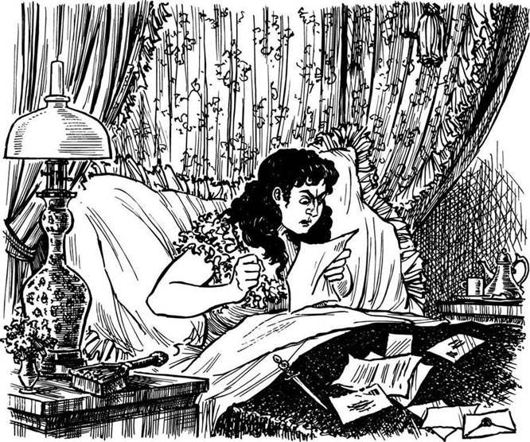
星期五早晨拉·卡洛塔在床上用早餐。她一边喝咖啡一边拆阅她的晨信。有一封信没有署名。它非常短。
你病了。今晚你不能演唱玛格丽塔。待在家里不要去歌剧院。否则会有意外。你想失声吗——永远地？
拉·卡洛塔非常非常气愤。她立即下床，连早餐都没有吃完。
“这是克里斯廷·达埃的朋友写来的，”她想，“他们希望她今晚再次演唱。那个达埃姑娘将为此而感到懊悔！我，拉·卡洛塔，是巴黎最好的歌剧演唱家。没有什么能够阻止我今晚演唱玛格丽塔！”
当天晚上6点钟舞蹈演员们都来到了她们的化妆室。她们一边笑谈着一边穿上她们的红黑的《浮士德》歌剧服。但是梅格·吉丽却一言不发。
“怎么了，梅格？”安妮·索雷丽问。
“是歌剧院的幽灵，”梅格说，“我妈妈说他发怒了。她担心今晚会发生什么事。”
“哦，呸！”那个黑发姑娘说，“谁会害怕什么幽灵？”
一个小时以后阿曼德先生和弗明先生步入五号包厢坐下。他们不害怕幽灵。当然不怕。歌剧院里根本就没有幽灵。
随后阿曼德先生发现包厢门边的地上放着一些鲜花。“弗明，”他轻声问，“是你把那些鲜花放在那里的？”
弗明先生看了看。“不，我没有，”他又轻声反问：“是你吗？”
“当然不是，你这个傻瓜！嘘，歌剧开始了。”
拉·卡洛塔在开始的头一个小时里不演唱。五号包厢里没有异常的声音，于是两位经理开始感觉心情愉快了。接着拉·卡洛塔上了台，这时弗明先生看着阿曼德先生。
“刚才你听到什么声音了吗？”他轻声问。
“没有！”阿曼德先生说，但是他往身后看了两次，随后又看了第三次，并且突然感到一丝凉意。
拉·卡洛塔唱啊唱，并没有发生什么事。接着她开始演唱一首优美的爱情歌曲。
“我的爱始于——呱！”
众人面面相觑。卡洛塔的嗓音怎么了？那个陌生的杂音——呱是什么？
卡洛塔停下来重新开始演唱。
“我的爱始于——呱！”
“我无法忘记我的——呱！”
这是癞蛤蟆的鼓噪！人们开始交头接耳并且哄笑。弗明先生把头埋进双手之中。然后他觉得阿曼德先生的手放在了自己的手臂上。包厢里有一个声音！一个男人的声音，大笑着！
可怜的卡洛塔试了一次又一次。
“我无法忘记我的——呱！”
接着这两位经理又听到了那个声音，它来自身后，面前，各个方向。“今晚她的演唱将会使枝形吊灯落下来！”
两位经理抬头朝歌剧院的屋顶看去。他们的脸色变得惨白。那著名的有着上千盏灯的枝形吊灯，竟然脱离束缚它的绳索坠落在下面的观众席上。
对于巴黎歌剧院来说那是一个可怕的夜晚。一名妇女被枝形吊灯砸死，还有许多人被砸伤。歌剧院为此关闭两周。而拉·卡洛塔从此再没有演唱过。
7 My angel of music
7
My angel of music
For a week Raoul saw Christine every day. Some days Christine was quiet and unhappy, some days she laughed and sang. She never wanted to talk about the Opera House, or her singing, or Raoul's love for her. Raoul was very afraid for her. Who, or what, was this strange teacher, this man's voice, her 'angel of music'?
Then one day there was no Christine. She was not at her home, not at the Opera House, not at their meeting places. Raoul looked everywhere and asked everybody. Where was Christine Daaé? But nobody knew.
Two days before the Opera House opened again, a letter arrived for Raoul. It was from Christine.
Meet me in an hour at the top of the Opera House, on the tenth floor.
The tenth floor of the Opera House was a dangerous place. There were hundreds of ropes going down to the stage below— it was a long, long way down.
Raoul and Christine sat in a dark corner, and Raoul took Christine's hands. Her face was white and tired.
'Listen, Raoul,' she said quietly. 'I'm going to tell you everything. But this is our last meeting. I can never see you again.'
'No, Christine!' Raoul cried. 'I love you, and we—'
'Shh! Quietly! Perhaps he can hear us. He's everywhere in the Opera House, Raoul!'
'Who? What are you talking about, Christine?'
'My angel of music. I couldn't meet you last Saturday because he came for me, and took me away. I was in my dressing-room in the Opera House and suddenly, he was there in front of me! I saw the voice for the first time! He wore black evening clothes and a mask over his face. He took me through many secret doors and passages, down, down under the Opera House. There is a lake down there, a big lake; the waters are black and cold. He took me across the lake in a boat to his house. He lives there, Raoul, in a house on the lake, under the Opera House!'
Raoul stared at her. Was his beautiful Christine mad? Christine saw his face, and said quickly:
'It's true, Raoul, it's true! And he... he is the Phantom of the Opera! But he's not a ghost, he's not an angel of music, he's a man! His name is Erik, and he loves me, he wants me to be his wife! No, Raoul, listen, there is more. He told me all this in his house, in a beautiful room. He said that no woman could ever love him, because of his face. He was so unhappy! Then he took off his mask, and I saw his face.'
She began to cry, and Raoul put his arms around her.
'Oh Raoul, he has the most terrible face! It is so ugly! I wanted to scream and run away. But where could I run to? He has the face of a dead man, Raoul, but he is not dead! He has no nose, just two black holes in his yellow face. And his eyes! Sometimes they are black holes, sometimes they have a terrible red light...'
She put her face in her hands for a second. Then she said, 'I stayed in his house for five days. He was very good to me, and I felt sorry for him, Raoul. He wants me to love him, and I told him... I told him...'
'No, Christine, no! You're going to be my wife! Come away with me at once, today! You can't go back to him.'
'But I must,' Christine said quietly. 'He knows about you, Raoul. He knows about us. He says he's going to kill you. I must go back to him.'
'Never!' said Raoul. 'I love you, Christine, and I'm going to kill this Erik!'
Erik... Erik...Erik... Erik... The word whispered round the Opera House. Raoul and Christine stared.
'What was that?' Raoul said, afraid. 'Was that...his voice? Where did it come from?'
'I'm afraid, Raoul,' Christine whispered. 'I'm singing Margarita again on Saturday. What's going to happen?'
'This,' Raoul said. 'After the opera on Saturday night, you and I are going away together. Come on, let's go down now. I don't like it up here.'
They went carefully along a dark passage to some stairs, then suddenly stopped. There was a man in front of them, a tall man in a long dark coat and a black hat. He turned and looked at them.
'No, not these stairs,' he said. 'Go to the stairs at the front. And go quickly!'
Christine turned and ran. Raoul ran after her.
'Who was that man?' he asked.
'It's the Persian,' Christine answered.
'But who is he? What's his name? Why did he tell us to go to the front stairs?'
'Nobody knows his name. He's just the Persian. He's always in the Opera House. I think he knows about Erik, but he never talks about him. Perhaps he saw Erik on those stairs, and wanted to help us.'
Hand in hand, they ran quickly down the stairs, through passages, then more stairs and more passages. At one of the little back doors to the Opera House, they stopped.
'On Saturday night, then. After the opera,' Raoul said. 'I'm going to take you away, and marry you.'
Christine looked up into his face. 'Yes, Raoul.'
Then they kissed, there by the door of the Opera House. Their first kiss.
strange adj. hard to accept or understand; surprising. 奇怪的。
mask n. a covering for the face to hide or protect it. 面罩；面具；防护面具。
scream v. to cry out loudly on a high note, in fear, pain, excitement, or sometimes laughter. （因害怕、疼痛、激动而）尖叫；大哭。
second n. a moment. 片刻，瞬间。
Persia n. the people of Persia (now called Iran). 波斯人。
marry v. to take (a person) in marriage. 结婚；娶；嫁。
kiss v. to touch with the lips as a sign of love or as a greeting. 吻；亲吻；接吻。
7．我的音乐天使
7．我的音乐天使
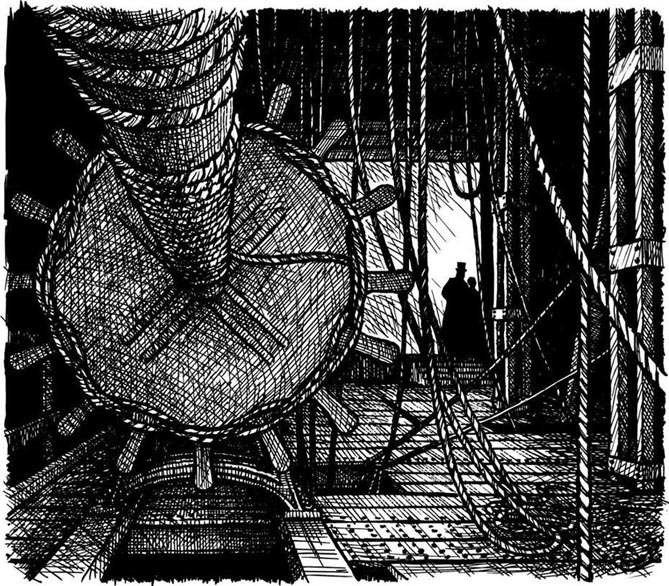
在一个星期的时间里拉乌尔天天都与克里斯廷约会。有时候克里斯廷显得沉默而不太高兴，而有时候她又笑又唱。她从不愿提及歌剧院，不愿提及她的演唱，也不愿提及拉乌尔对她的爱。拉乌尔为她感到非常担心。这个奇怪的老师，这个男人的声音，她的“音乐天使”到底是谁，或者是什么？
后来有一天克里斯廷不见了。她不在家里，不在歌剧院里，也不在他们约会的地方。拉乌尔到处找并且问遍了所有的人。克里斯廷·达埃在哪里？但是没有人知道。
在歌剧院重新开业的前两天，一封信送到了拉乌尔手里。它是克里斯廷写来的。
一个小时以后到歌剧院的顶层第11层来见我。
歌剧院的第11层是一个危险的地方。那里有数百条绳索垂向下面的舞台——长长地下垂着。
拉乌尔和克里斯廷坐在一个阴暗的角落里，拉乌尔握着克里斯廷的双手。她的脸色苍白，显得有些疲惫。
“听着，拉乌尔，”她轻声说，“我将把一切都告诉你。但是这是我们的最后一次约会。我再也不能见你了。”
“不，克里斯廷！”拉乌尔喊道，“我爱你，而且我们——”
“嘘！小声点！也许他能听到我们。在歌剧院里他无处不在，拉乌尔！”
“谁？你在说什么，克里斯廷？”
“我的音乐天使。上个星期六我不能来见你，因为他来找我，并且把我带走了。当时我正在歌剧院我的化妆室里，突然地，他就出现在我的面前！我第一次看到了发出这个声音的人！他穿着黑色晚礼服，脸上戴着面罩。他带着我穿过许多秘密的门和走廊，在歌剧院的底下一直往下走、往下走。那下面有一个湖，一个挺大的湖；湖水又黑又凉。他用小船带着我渡过那个湖去他的住处。他住在那里，拉乌尔，住在湖上的一座房子里，在歌剧院的底下！”
拉乌尔凝视着她。他美丽的克里斯廷疯了吗？克里斯廷看着他的脸，急急地说：
“这是真的，拉乌尔，这是真的！而他……他就是那个歌剧院的幽灵！不过他不是鬼，他也不是音乐天使，他是一个男人！他的名字叫埃里克，他爱我，他希望我成为他的妻子！不，拉乌尔，听着，还有。在他的房子里，在一个漂亮的房间里，他把这一切都告诉了我。他说没有一个女人会爱上他，都是因为他的脸。他是如此的不幸！接着他摘下面罩，我看到了他的脸。”
她开始哭了起来，拉乌尔一把将她抱住。
“哦！拉乌尔，他有一张最最可怕的脸！它是如此的丑陋！我真想尖叫着跑掉，可是我能往哪儿跑？他有一张死人一样的脸，拉乌尔，但是他并不是死人！他没有鼻子，在他黄色的脸上只有两个黑洞。还有他的眼睛！有时候它们是黑洞，有时候它们则发出可怕的红光……”
她把脸埋入双手之中，片刻之后她说：“我在他的房子里住了5天。他对我非常好，我觉得对不起他，拉乌尔。他希望我爱他，而我告诉他……我告诉他……”
“不，克里斯廷，不！你将成为我的妻子！来，马上和我离开这儿，就在今天！你不能回到他那儿去。”
“但是我必须，”克里斯廷轻声道，“他知道你，拉乌尔。他知道我们的事。他说他要杀了你。我必须回到他那儿去。”
“决不！”拉乌尔说，“我爱你，克里斯廷，而且我要杀了这个埃里克！”
埃里克……埃里克……埃里克……埃里克……这声音在歌剧院里低声回荡着。拉乌尔和克里斯廷面面相觑。
“那是什么？”拉乌尔害怕地说，“那是……他的声音吗？是从哪儿发出来的？”
“我害怕，拉乌尔，”克里斯廷轻声说，“星期六我将再次演唱玛格丽塔。到时候会发生什么事呢？”
“这样，”拉乌尔说，“演完星期六晚上的那场歌剧以后，你和我一起离开这儿。现在我们下去吧。我不喜欢待在这里。”
他们小心翼翼地沿着黑暗的走廊朝楼梯走去，接着突然停住了。有一个男人站在他们前面，这是一个高个子男人，穿着深色长外衣，戴着一顶黑色帽子。他转过身来看着他们。
“不，别走这楼梯，”他说，“去前面那楼梯，快走！”
克里斯廷转身就跑。拉乌尔跟着她跑。
“那个人是谁？”他问。
“是个波斯人。”克里斯廷回答。
“但是他是谁？他叫什么名字？为什么他告诉我们要走前面的楼梯？”
“没有人知道他的名字。他就是波斯人。他经常在歌剧院里。我想他知道埃里克，但是他从不提及他。或许他看到埃里克在那楼梯上，而想帮助我们。”
他们手拉着手飞快地跑下楼梯，穿过走廊，又走过更多的楼梯和走廊。在歌剧院的一个小小的后门口，他们停住了。
“那么星期六晚上，演完歌剧以后，”拉乌尔说，“我要带你离开这儿，并且和你结婚。”
克里斯廷抬头深情地看着他的脸。“好的，拉乌尔。”
随后他们接吻了，在歌剧院的那道门边。那是他们的初吻。
8 Where is Christine Daaé?
8
Where is Christine Daaé?
On Saturday morning Comte Philippe looked across the breakfast table at his brother.
'Don' t do it, Raoul, please. All this talk about ghosts and phantoms. I think the girl is mad.'
'She's not mad, and I'm going to marry her,' Raoul said.
'She's only a little opera singer,' Philippe said unhappily. 'And she's very young. Are you still going to love her in ten, or twenty, years' time?'
Raoul drank his coffee and did not answer.
There were two more unhappy faces in the Opera House, too. The directors now understood about O. G. They didn't want any more accidents.
'Box 5 is free tonight for O. G. Daaé is singing Margarita. And here is 20,000 francs. Madame Giry can leave the money in Box 5 for him. Is that everything?' Monsieur Armand asked Monsieur Firmin.
'It's a lot of money,' Monsieur Firmin said unhappily. He thought for a minute. 'What about some flowers in Box 5? Madame Giry says that O. G. likes flowers.'
'O. G. can bring his own flowers!' shouted Monsieur Armand.
The evening began well. The chandelier was now back in place, with new ropes. All Paris was in the Opera House. Everybody wanted to hear Christine Daaé's voice again. People also knew about the love story between Christine Daaé and the Vicomte de Chagny. There are no love secrets in Paris! People watched the Comte and the Vicomte in Box 14 with interest. Young men from families like de Chagny do not marry opera singers.
When Christine came onto the stage, her face was white and she looked afraid. But she sang like an angel. Ah, what a voice! All Paris was in love with Christine Daaé.
She began to sing the famous love song. Suddenly, every light in the Opera House went out. For a second nobody moved or spoke. Then a woman screamed, and all the lights came on again.
But Christine Daaé was no longer on the stage! She was not behind the stage, she was not under the stage. Nobody could find her.
The Opera House went mad. Everybody ran here and there, shouted and called. In the directors' office, people ran in and out. The police came, and asked questions. But nobody could answer the questions. Monsieur Armand got angry and shouted, and Monsieur Firmin told him to be quiet. Then Madame Giry arrived in the office with her daughter Meg.
'Go away, woman!' Monsieur Armand shouted.
'Monsieur, there are three people missing now!' Madame Giry said. 'Meg, tell the directors your story.'
This was Meg's story.
'When the lights went out, we were just behind the stage. We heard a scream—I think it was Christine Daaé's voice. Then the lights came back on, but Christine wasn't there! We were very afraid, and we began to run back to our dressing room. There were people running everywhere! Then we saw the Vicomte de Chagny. His face was red and he was very angry. "Where's Christine? Where's Christine?" he shouted. Suddenly the Persian came up behind him and took his arm. He said something to the Vicomte and they went into Christine Daaé's dressing-room...'
'Yes? And then?' Monsieur Firmin said quickly. 'What happened next?'
'Nobody knows!' Meg's face was white. 'We looked into Christine Daaé's dressing-room, but... but there was nobody there!'
accident n. something esp. something unpleasant, undesirable that happens unexpectedly or by chance. 事故。
go out (of a fire, light, etc.) to stop burning or shining. 熄灭。
miss v. to discover the absence or loss of. 发现不在或遗失。
8．克里斯廷·达埃哪儿去了？
8．克里斯廷·达埃哪儿去了？
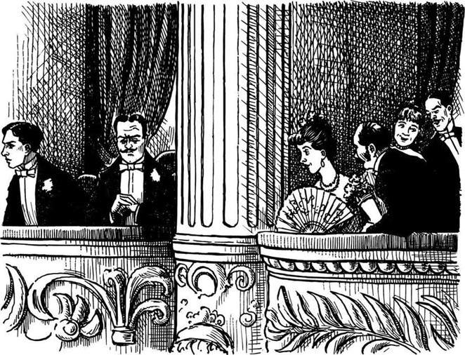
星期六早上菲利普伯爵望着早餐桌另一边的弟弟。
“请不要做这样的事，拉乌尔。这里所有人都在谈论鬼啊幽灵啊。我想那个姑娘疯了。”
“她没有疯，而且我要和她结婚。”拉乌尔说。
“她只是一个微不足道的歌剧演员，”菲利普不高兴地说，“而且她太年轻。10年或20年以后你还会爱她吗？”
拉乌尔喝着咖啡没有回答。
在歌剧院里也有两个闷闷不乐的人。经理们现在终于知道了O. G. 的厉害。他们不想再出现任何事故。
“五号包厢今晚空着留给O. G. 。由达埃来演唱玛格丽塔。另外这里是两万法郎。吉里夫人可以把这些钱留在五号包厢里给他。就这些了吧？”阿曼德先生问弗明先生。
“这是很多钱啊，”弗明先生不高兴地说。他想了一会儿，“在五号包厢里放些鲜花怎么样？吉里夫人说那个O. G. 喜欢鲜花。”
“O. G. 可以带上他自己的鲜花！”阿曼德先生喊道。
这个夜晚到来时，一切还是令人满意的。那枝形吊灯换了新的绳索又挂回了它原来的位置。巴黎所有的人都到了歌剧院。每个人都想再次欣赏克里斯廷·达埃的演唱。人们也都知道了克里斯廷·达埃和查格尼家族的子爵之间的爱情故事。在巴黎没有什么爱情秘密！人们饶有兴趣地朝14号包厢里的伯爵和子爵张望着。出身于像查格尼那样家族的年轻人是不会与歌剧演员结婚的。
当克里斯廷出现在舞台上的时候，她的脸色苍白而且看上去有些害怕。但是她唱得像一位天使。啊，多么美妙的声音！整个巴黎都爱上了克里斯廷·达埃。
她开始演唱那首著名的爱情歌曲。突然，歌剧院里所有的灯都熄灭了。这片刻之间没有人走动，也没有人说话。随后一个女人尖叫起来，与此同时所有的灯又都亮了。
但是克里斯廷却不再在舞台上了！她不在舞台的后面，她也不在舞台底下。没有人能够找到她。
歌剧院里乱得一团糟。每个人都跑来跑去，又喊又叫。在经理办公室里，人们跑进跑出。警察来了，问了一些问题。但是没有人能够回答这些问题。阿曼德先生发着脾气，喊叫着，弗明先生要他冷静一些。接着，吉里夫人领着她的女儿梅格走进了办公室。
“出去，小娘们！”阿尔曼先生喊道。
“先生，现在有三个人失踪了！”吉里夫人说，“梅格，把你看到的事告诉经理们。”
这是梅格的故事。
“当灯熄灭的时候，我们正在舞台的后面。我们听到一声尖叫——我觉得是克里斯廷·达埃的声音。随后灯又亮了，但是克里斯廷不见了！我们非常害怕，我们都开始往自己的化妆室跑。人们到处乱跑！接着我们看见了查格尼家族的子爵。他满脸通红而且显得非常愤怒。‘克里斯廷在哪里？克里斯廷在哪里？’他喊着。突然那个波斯人从他后面走过来抓住他的手臂，他对子爵说了些什么，然后他们就进了克里斯廷·达埃的化妆室……”
“是吗？那么后来呢？”弗明先生着急地问，“接下来发生了什么事？”
“没有人知道！”梅格脸色苍白，“我们朝克里斯廷·达埃的化妆室里面看了看，但是……但是那里并没有人！”
9 The house on the lake
9
The house on the lake
When the lights came on, Raoul ran. He ran down stairs and along passages, through the Opera House to the back of the stage. In the passage outside Christine's dressing-room, a hand took his arm.
'What's the matter, my young friend? Where are you running to, so quickly?'
Raoul turned and saw the long face of the Persian under his black hat.
'Christine!' Raoul said quickly. 'Erik's got her. Where is she? Help me! How do I get to his house on the lake?'
'Come with me,' said the Persian. They went quickly into Christine's dressing-room. The Persian closed the door and went to the big mirror on one wall.
'There's only one door into this room,' Raoul began.
'Wait,' the Persian said. He put his hands on the big mirror, first here, then there. For a minute nothing happened. Then the mirror began to move and turn, and a big dark hole opened in it. Raoul stared.
'Quick! Come with me, but be careful,' the Persian said. 'I know Erik. I understand his secrets. Put your right hand up near your head, like this, and keep it there all the time.'
'But why?' Raoul asked.
'Remember Joseph Buquet, and the rope around his neck? Erik is a clever man with ropes in the dark.'
They went down, down, down, under the Opera House. They went through secret doors in the floors, then along passages and down dark stairs. The Persian listened carefully all the time for strange noises.
'When do we get to the lake?' Raoul whispered.
'We're not going by the lake. Erik watches it all the time. No, we go round the lake and get into Erik's house from the back. I know some secret doors.'
Soon they were there. In the dark, the Persian felt the wall carefully with his hands. 'Ah, here it is,' he whispered. The wall moved under his hands and a small door opened. Very quietly, they went through, and then the door closed behind them. They could not get out.
Inside the room it was very dark. They waited and listened. The Persian put his hands on the wall.
'Oh no!' he whispered. 'It was the wrong door! This is Erik's torture room—the room of mirrors! We are dead men, Vicomte de Chagny, dead men!'
At first Raoul did not understand. But he soon learnt. The lights came on, and they heard a man's laugh. Erik knew they were there.
The room was all mirrors—walls, floor, ceiling. There were pictures in the mirrors of trees and flowers and rivers. The pictures moved and danced in front of their eyes. And the room was hot. It got hotter and hotter and hotter. Raoul was thirsty, hot and thirsty, and the rivers in the pictures danced and laughed at him. He closed his eyes, but the rivers still danced. Water, he needed water, but the mirrors laughed at him. Soon he could not move or speak, or open his eyes. He was not thirsty now, just tired, so tired. 'Oh Christine, I'm sorry,' he thought. 'I wanted to help you, and now I'm dying...'
Through a mirror in the wall Christine watched her lover in the torture room. Behind her Erik stood, with his hands on her arms.
'He's dying, Christine, dying. Watch him carefully. No, don't close your eyes. Watch him!'
Christine could not speak. She wanted to scream, but no words came. Then she found her voice again.
'How can you do this, Erik! Why don't you kill me?'
'Because I love you, Christine. Marry me, be my wife, and love me. Then Raoul and the Persian can live.'
Slowly, Christine turned. She looked into Erik's terrible, ugly face, and spoke again, very quietly.
'Yes, Erik. From this minute I am your wife.' She put her arms around Erik's neck, and kissed him—kissed him slowly and lovingly on his ugly mouth. Then she took her arms away and said slowly, 'Poor, unhappy Erik.'
Erik stared at her. 'You kissed me!' he whispered. 'I didn't ask you, but you kissed me—freely! Oh Christine, my angel! That was my first kiss from a woman. Even my mother never kissed me! She gave me my first mask when I was two years old. She turned her face away from me every time I came near her.'
Erik put his ugly face in his hands and cried. Then he went down on the floor at Christine's feet. 'You are free, Christine, free! Go away and marry your Raoul, and be happy. But remember Erik, sometimes. Go now, quickly! Take Raoul and the Persian, and go!'
mirror n. a piece of glass, or other shiny or polished surface that throws back images that fall on it. 镜子。
torture n. the causing of severe pain, done out of cruelty, to find out information etc. 严刑拷打；酷刑。
ceiling n. the inner surface of the top of a room. 天花板。
freely adv. willingly; readily. 情愿地；欣然地。
9．湖面上的房子
9．湖面上的房子
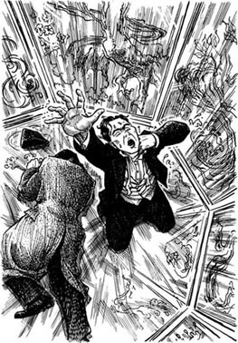
当灯亮起的时候，拉乌尔跑了。他跑下楼梯，沿着走廊，穿过歌剧院来到舞台的背后。在克里斯廷的化妆室门外的走廊上，一只手抓住了他的手臂。
“怎么了，我年轻的朋友？你跑得这么快要去哪儿？”
拉乌尔转过身来看到了黑色帽子下的那张波斯人的长脸。
“克里斯廷！”拉乌尔急急地说，“埃里克把她掳走了。她在哪里？帮帮我！我怎么去他湖上的房子？”
“跟我来。”波斯人说。他们飞快地进了克里斯廷的化妆室。波斯人把门关上，朝墙上的那面大镜子走去。
“进这个房间只有一扇门啊。”拉乌尔忍不住说。
“等一会儿，”波斯人说。他把手放在大镜子上，摸摸这儿，又摸摸那儿。过了一会儿并没有什么动静。接着镜子开始转动起来，里面出现了一个大的黑洞。拉乌尔目瞪口呆。
“快！跟我来，不过小心点儿，”波斯人说，“我了解埃里克。我知道他的秘密。把你的右手举起来靠近你的头，像这样，并且要一直保持那样。”
“这是为什么？”拉乌尔问。
“还记得约瑟夫·比凯和绕在他脖子上的绳子吗？埃里克是个聪明人，善于在黑暗中使用绳子。”
他们往歌剧院的底下走，往下，往下，一直往下。他们通过地板上的一层层密门，接着沿着走廊走下黑暗的楼梯。波斯人一直仔细倾听着有无异样的声音。
“我们什么时候才能到湖边？”拉乌尔轻声问。
“我们不从湖上走。埃里克一直在那儿看守着。不，我们绕过那湖从后面进入埃里克的房子。我知道一些秘密的门。”
不久他们到了那里。黑暗中，波斯人用手仔细地在墙上摸索。“啊，在这里。”他低声道。墙在他手下动起来，一扇小门打开了。他们脚步很轻地走进去，然后门在他们的身后关上了。他们不能出去了。
房间里很黑。他们等待着、倾听着。波斯人把手放到墙上。
“哦，不对！”他低声道，“我们走错了门！这是埃里克的拷问室——那个都是镜子的房间！我们成了死人了，查格尼家族的子爵，死人！”
一开始拉乌尔还没有明白是怎么回事，但是不久他就知道了。灯亮了，而且他们听到一个男人的笑声。埃里克知道他们在那里。
这个房间里全是镜子——墙、地板、天花板。镜子里有树、鲜花、河流的图画。这些图画在他们的眼前跳动着。而且房间里热烘烘的。它变得越来越热。拉乌尔觉得渴，又热又渴，而图画上的河流跳动着仿佛在嘲笑他。他闭上眼睛，但是河流依旧在晃动着。水，他需要水，但是镜子在嘲笑他。不久他就不能动不能说话，也不能睁眼了。他现在不觉得渴了，只觉得累，累极了。“哦！克里斯廷，对不起，”他想，“我想帮助你，而现在我快要死了……”
透过墙上的镜子克里斯廷看着在拷问室里的她的情人。她的身后站着埃里克，他的双手放在她的手臂上。
“他快要死了，克里斯廷，快要死了。仔细地看着他。不，不许闭上眼睛，看着他！”
克里斯廷说不出话来。她想尖叫，但发不出声音。接着她发现自己又能说话了。
“你怎么能这样做，埃里克！你为什么不杀了我？”
“因为我爱你，克里斯廷。和我结婚吧，做我的妻子，并且爱我。这样拉乌尔和波斯人就能活下来。”
慢慢地，克里斯廷转过身来。她看着埃里克那可怕、丑陋的脸，又一次开口说话了，非常温和地说。
“好的，埃里克。从这一刻起我就是你的妻子了。”她张开双臂搂住埃里克的脖子，并且吻了他——缓慢而充满爱意地吻了他那丑陋的嘴。随后她放下手臂缓缓地说：“可怜的不幸的埃里克。”
埃里克凝视着她。“你吻了我！”他轻声道，“我没有要求你，但是你吻了我——自愿地！哦，克里斯廷，我的天使！这是我从女人那儿得到的第一个吻。即便我的母亲也从来没有吻过我！我两岁的时候，她给了我第一个面罩。每次我走近她，她都把脸转开去。”
埃里克把他那丑陋的脸埋进双手哭了起来。随后他伏倒在克里斯廷的脚下。“你自由了，克里斯廷，自由了！去和你的拉乌尔结婚吧，祝你们幸福。不过有的时候不要忘记埃里克。现在就走吧，快！带上拉乌尔和波斯人，走吧！”
10 Madame Giry visits the Persian
10
Madame Giry visits the Persian
For weeks, all Paris talked about that night at the opera. Everybody asked questions, but nobody knew the answers. Where was Christine Daaé? Where was the Vicomte de Chagny? Were they alive, or dead?
And the Phantom of the Opera... ?
Some weeks after that famous night Madame Giry went out one afternoon to a small house near the Rivoli Gardens. She went in and up the stairs to some rooms at the top of the house. The Persian opened the door.
Madame Giry looked at him. 'My friend, you know the answers. Please tell me. Are they alive or dead?'
'Come in,' the Persian said quietly.
They sat down on some chairs by the window, and looked out across the Rivoli Gardens.
'Yes,' the Persian said slowly, 'The Phantom is dead now. He did not want to live any longer. I saw his body three days ago, and because of that, I can talk to you about him. He cannot kill me now.'
'So the Phantom was really a man?' Madame Giry asked.
'Yes, his name was Erik. That was not his real name, of course. He was born in France, but I knew him in Persia. He was a famous builder and I worked with him there. For a time I was his friend, but not for long. When he came to Paris, I came after him—I wanted to watch him. He was a very clever, very dangerous man. He could be in two, or three, places at the same time. He could be in one place, and his voice could come from another place. He could do many clever things with ropes, and mirrors, and secret doors. You see, he helped to build the Opera House. He built secret passages underground, and his secret house on the lake. He could not live in the outside world, because of his terrible, ugly face. Unhappy Erik! We can feel sorry for him, Madame Giry. He was so clever... and so ugly. People screamed when they saw his face. And so he lived this strange life—half-man, half-phantom. But he was a man, in the end. He wanted a woman's love...'
He stopped, and Madame Giry asked quietly, 'And Christine Daaé and Vicomte Raoul? What happened to them?'
The Persian smiled. 'Ah yes! What happened to young Raoul and the beautiful Christine...? Who knows?'
Nobody in Paris ever saw Raoul and Christine again. Perhaps they took a train to the north, and lived a quiet, happy life together there. Perhaps Christine's wonderful voice is still singing, somewhere in the cold and beautiful mountains of Norway. Who knows?
phantom n. a shadowy likeness of a dead person. 幽灵；鬼怪。
watch v. to take care of, be careful with, or pay attention to. 监视，注视。
underground adv. under the earth's surface. 在地下。
10．吉里夫人拜访波斯人
10．吉里夫人拜访波斯人
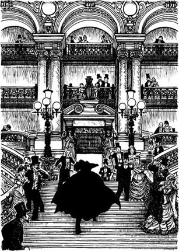
几个星期以来，整个巴黎都在谈论歌剧院的那个夜晚。每个人都问这问那，但是没有人知道问题的答案。克里斯廷·达埃哪儿去了？查格尼家族的子爵哪儿去了？他们是活着，还是死了？
还有那歌剧院的幽灵……？
在那个出名的夜晚过去几个星期以后的一天下午，吉里夫人出门去了里沃利花园附近的一座小房子。她进门上了楼梯来到房子顶层的几个房间前，波斯人打开了房门。
吉里夫人看着他。“我的朋友，你知道结果。请告诉我，他们是活着还是死了？”
“进来。”波斯人轻声说。
他们在靠近窗口的椅子上坐下，看着窗外的里沃利花园。
“是的，”波斯人缓缓地说，“那个幽灵现在已经死了。他不想再活下去了。我三天前见到了他的尸体，正因为如此，我才可以告诉你他的事。他现在不能杀我了。”
“那么那个幽灵真的是一个男人吗？”吉里夫人问。
“对，他的名字叫埃里克。当然，那不是他的真名。他出生在法国，不过我是在波斯认识他的。他是一位著名的建筑师，我在那儿跟他工作。我一度是他的朋友，但是并不长久。当他来巴黎时，我跟随他来了——我想监视他。他是一个非常聪明、非常危险的人物。他能够同时在两个或三个地方出现。他能够做到身在一个地方，而他的声音来自另一个地方。他能利用绳子、镜子和秘密的门做许多巧妙的事情。你看，他帮助建造了歌剧院。他建造了地下秘密通道和他的湖上秘密居所。他不能生活在外面的世界，因为他的可怕、丑陋的脸。不幸的埃里克！我们可以为他感到难过，吉里夫人。他是如此聪明……而又如此丑陋。人们看到他的脸就尖叫起来。所以他过着这种怪异的生活——半人半鬼。但是他终究是个男人。他需要女人的爱……”
他话一停，吉里夫人轻声问：“那克里斯廷·达埃和拉乌尔子爵呢？他们怎么样了？”
波斯人微笑着。“啊，对了！年轻的拉乌尔和美丽的克里斯廷怎么样了……？谁知道呢？”
巴黎没有人再见过拉乌尔和克里斯廷。也许他们坐上了北去的火车，在那里一起过着平静、快乐的生活。也许克里斯廷那美妙的歌喉依然在歌唱，在挪威寒冷而美丽的山里的某个地方。谁知道呢？
Exercises
A Checking your understanding
Chapters 1 - 2 How much can you remember? Check your answers.
1 How many doors are there in the Paris Opera House?
2 Which is the ghost's box in the Opera House?
3 Who found Joseph Buquet's dead body?
4 How much money did the ghost want from the directors?
5 Who was the best singer in Paris at the beginning of the story?
Chapters 3 - 4 Find answers to these questions in the text.
1 What did Paris think about the new Margarita in Faust?
2 When did Raoul de Chagny first meet Christine?
3 After Christine left, why did Raoul go into her dressing-room?
4 What did Madame Giry say about the two directors?
5 What did Monsieur Armand want to do on Friday night?
Chapters 5 - 6 Are these sentences true (T) or false (F)?
1 Christine wanted to meet Raoul at two o'clock.
2 Christine hears the voice of her 'angel of music', but she never sees him.
3 La Carlotta had a letter from the Opera ghost.
4 Monsieur Firmin put some flowers by the door of Box 5.
5 La Carlotta's singing brought the chandelier down.
Chapters 7 - 8 Who in these chapters...
1 ... wanted to meet Raoul on the tenth floor of the Opera House?
2 ... took Christine to his house on the lake under the Opera House?
3 ... told Christine and Raoul to go down the front stairs?
4 ... asked Raoul not to marry Christine?
5 ... saw the Persian and Raoul go into Christine's dressing-room?
Chapters 9 - 10 Write answers to these questions.
1 How did the Persian and Raoul get out of Christine's dressing-room?
2 Why did the Persian say, 'We are dead men?'
3 Why did Erik say that Christine was free to marry Raoul?
4 Why could the Persian talk to Madame Giry?
5 What do you think happened to Christine Daaé and Vicomte Raoul?
B Working with language
1 Put together these beginnings and endings of sentences.
1) Madame Giry often heard the Opera ghost,
2) Because the directors were new in the Opera House,
3) Monsieur Armand did not want Daaé to sing Margarita
4) When Raoul heard a man's voice in Christine's dressing-room,
5) the Opera ghost wrote to tell them some important things.
6) he thought it was her lover.
7) because she was young and nobody knew her.
8) but she never saw him.
2 Put these sentences in the right order. Check your order with chapters 7 and 8.
1) Then the lights came on again, but Christine was not on the stage.
2) In the passage he met the Persian and asked him for help to find Christine.
3) On Thursday Christine met Raoul at the top of the Opera House.
4) On Saturday night Raoul watched the opera from Box 14.
5) She told him about Erik and his house on the lake.
6) Raoul ran through the Opera House to Christine's dressing-room.
7) When Christine began to sing the famous love song, all the lights went out.
8) They made a plan to go away from Paris.
C Activities
1 Do you feel sorry for Erik? Why, or why not?
2 You are Raoul de Chagny. Write his first letter to his brother Philippe, a year after the end of the story.
3 You work for a newspaper. Write a short report to describe the night at the Opera House when the chandelier crashed down.
4 'One dark winter night, I was alone in an old house. It was a long way from other houses, and there was no telephone. At first I was not afraid, because I don't believe in ghosts. But at midnight, I heard a sudden noise...'
Write about a hundred words to finish this short ghost story.
Glossary
alone not with other people
angel a messenger from God, or a very special, wonderful person
began past tense of 'to begin'
box a small 'room' with three walls in a theatre; you can watch the stage from a box, but other people can't see you
broke past tense of 'to break'
built past tense of 'to build'
came past tense of 'to come'
chandelier a very big, beautiful light, which has lots of little lights in it
clever quick to understand and learn
could past tense of 'can'
crash (v.) fall or hit something hard and noisily
dancer somone who dances (moving the body to music)
dangerous something dangerous can hurt or kill you
director somebody who is the head person in a company, theatre, etc.
doorkeeper (in this story) a person who looks after the boxes in a theatre
drank past tense of 'to drink'
enemy the opposite of 'a friend'
felt past tense of 'to feel'
floor all the rooms on the same level in a building
fool someone who is stupid, not quick at understanding or learning
found past tense of 'to find'
gave past tense of 'to give'
ghost people can see the ghost of a dead person
got past tense of 'to get'
ground the ground is under our feet
had past tense of 'to have'
heard past tense of 'to hear'
hole a small opening in something
joke something people say or do to make other people laugh
kiss to touch someone lovingly with your mouth
knew past tense of 'to know'
lake a big area of water, with land all round it
left past tense of 'to leave'
light (n.) to see in the dark, you need a light
mad ill in the head
mask a cover that you put over the face to hide it
met past tense of 'to meet'
mirror a piece of glass where you can see yourself (some special mirrors you can also look through, like a window)
missing (adj.) if something or someone is missing, you can't find them
music when you sing or play an instrument, you make music
neck the part of the body between the head and the shoulders
opera a play in a theatre which has singing and music
passage a long narrow place in a building between rooms
phantom a ghost
ran past tense of 'to run'
rope very thick, strong string
sang past tense of 'to sing'
sat past tense of 'to sit'
saw past tense of 'to see'
scream to cry out in a very loud, high voice
secret something that you do not tell other people
shadow a place or thing that is dark because there is something between it and the light
shout to speak or cry very loudly and strongly
spoke past tense of 'to speak'
stage the part of a theatre where actors, singers, and dancers stand and move
stare to look at someone or something for a long time
stood past tense of 'to stand'
terrible very, very bad
thought past tense of 'to think'
toad a small animal, like a frog, that lives in wet places
told past tense of 'to tell'
took past tense of 'to take'
torture (n.) doing very painful, terrible things to people's bodies
ugly not beautiful
understood past tense of 'to understand'
voice you talk or sing with your voice
went past tense of 'to go'
whisper to speak very, very quietly
wore past tense of 'to wear'
Exercises
10．吉里夫人拜访波斯人
几个星期以来，整个巴黎都在谈论歌剧院的那个夜晚。每个人都问这问那，但是没有人知道问题的答案。克里斯廷·达埃哪儿去了？查格尼家族的子爵哪儿去了？他们是活着，还是死了？
还有那歌剧院的幽灵……？
在那个出名的夜晚过去几个星期以后的一天下午，吉里夫人出门去了里沃利花园附近的一座小房子。她进门上了楼梯来到房子顶层的几个房间前，波斯人打开了房门。
吉里夫人看着他。“我的朋友，你知道结果。请告诉我，他们是活着还是死了？”
“进来。”波斯人轻声说。
他们在靠近窗口的椅子上坐下，看着窗外的里沃利花园。
“是的，”波斯人缓缓地说，“那个幽灵现在已经死了。他不想再活下去了。我三天前见到了他的尸体，正因为如此，我才可以告诉你他的事。他现在不能杀我了。”
“那么那个幽灵真的是一个男人吗？”吉里夫人问。
“对，他的名字叫埃里克。当然，那不是他的真名。他出生在法国，不过我是在波斯认识他的。他是一位著名的建筑师，我在那儿跟他工作。我一度是他的朋友，但是并不长久。当他来巴黎时，我跟随他来了——我想监视他。他是一个非常聪明、非常危险的人物。他能够同时在两个或三个地方出现。他能够做到身在一个地方，而他的声音来自另一个地方。他能利用绳子、镜子和秘密的门做许多巧妙的事情。你看，他帮助建造了歌剧院。他建造了地下秘密通道和他的湖上秘密居所。他不能生活在外面的世界，因为他的可怕、丑陋的脸。不幸的埃里克！我们可以为他感到难过，吉里夫人。他是如此聪明……而又如此丑陋。人们看到他的脸就尖叫起来。所以他过着这种怪异的生活——半人半鬼。但是他终究是个男人。他需要女人的爱……”
他话一停，吉里夫人轻声问：“那克里斯廷·达埃和拉乌尔子爵呢？他们怎么样了？”
波斯人微笑着。“啊，对了！年轻的拉乌尔和美丽的克里斯廷怎么样了……？谁知道呢？”
巴黎没有人再见过拉乌尔和克里斯廷。也许他们坐上了北去的火车，在那里一起过着平静、快乐的生活。也许克里斯廷那美妙的歌喉依然在歌唱，在挪威寒冷而美丽的山里的某个地方。谁知道呢？
Exercises
A Checking your understanding
Chapters 1 - 2 How much can you remember? Check your answers.
1 How many doors are there in the Paris Opera House?
2 Which is the ghost's box in the Opera House?
3 Who found Joseph Buquet's dead body?
4 How much money did the ghost want from the directors?
5 Who was the best singer in Paris at the beginning of the story?
Chapters 3 - 4 Find answers to these questions in the text.
1 What did Paris think about the new Margarita in Faust?
2 When did Raoul de Chagny first meet Christine?
3 After Christine left, why did Raoul go into her dressing-room?
4 What did Madame Giry say about the two directors?
5 What did Monsieur Armand want to do on Friday night?
Chapters 5 - 6 Are these sentences true (T) or false (F)?
1 Christine wanted to meet Raoul at two o'clock.
2 Christine hears the voice of her 'angel of music', but she never sees him.
3 La Carlotta had a letter from the Opera ghost.
4 Monsieur Firmin put some flowers by the door of Box 5.
5 La Carlotta's singing brought the chandelier down.
Chapters 7 - 8 Who in these chapters...
1 ... wanted to meet Raoul on the tenth floor of the Opera House?
2 ... took Christine to his house on the lake under the Opera House?
3 ... told Christine and Raoul to go down the front stairs?
4 ... asked Raoul not to marry Christine?
5 ... saw the Persian and Raoul go into Christine's dressing-room?
Chapters 9 - 10 Write answers to these questions.
1 How did the Persian and Raoul get out of Christine's dressing-room?
2 Why did the Persian say, 'We are dead men?'
3 Why did Erik say that Christine was free to marry Raoul?
4 Why could the Persian talk to Madame Giry?
5 What do you think happened to Christine Daaé and Vicomte Raoul?
B Working with language
1 Put together these beginnings and endings of sentences.
1) Madame Giry often heard the Opera ghost,
2) Because the directors were new in the Opera House,
3) Monsieur Armand did not want Daaé to sing Margarita
4) When Raoul heard a man's voice in Christine's dressing-room,
5) the Opera ghost wrote to tell them some important things.
6) he thought it was her lover.
7) because she was young and nobody knew her.
8) but she never saw him.
2 Put these sentences in the right order. Check your order with chapters 7 and 8.
1) Then the lights came on again, but Christine was not on the stage.
2) In the passage he met the Persian and asked him for help to find Christine.
3) On Thursday Christine met Raoul at the top of the Opera House.
4) On Saturday night Raoul watched the opera from Box 14.
5) She told him about Erik and his house on the lake.
6) Raoul ran through the Opera House to Christine's dressing-room.
7) When Christine began to sing the famous love song, all the lights went out.
8) They made a plan to go away from Paris.
C Activities
1 Do you feel sorry for Erik? Why, or why not?
2 You are Raoul de Chagny. Write his first letter to his brother Philippe, a year after the end of the story.
3 You work for a newspaper. Write a short report to describe the night at the Opera House when the chandelier crashed down.
4 'One dark winter night, I was alone in an old house. It was a long way from other houses, and there was no telephone. At first I was not afraid, because I don't believe in ghosts. But at midnight, I heard a sudden noise...'
Write about a hundred words to finish this short ghost story.
Glossary
alone not with other people
angel a messenger from God, or a very special, wonderful person
began past tense of 'to begin'
box a small 'room' with three walls in a theatre; you can watch the stage from a box, but other people can't see you
broke past tense of 'to break'
built past tense of 'to build'
came past tense of 'to come'
chandelier a very big, beautiful light, which has lots of little lights in it
clever quick to understand and learn
could past tense of 'can'
crash (v.) fall or hit something hard and noisily
dancer somone who dances (moving the body to music)
dangerous something dangerous can hurt or kill you
director somebody who is the head person in a company, theatre, etc.
doorkeeper (in this story) a person who looks after the boxes in a theatre
drank past tense of 'to drink'
enemy the opposite of 'a friend'
felt past tense of 'to feel'
floor all the rooms on the same level in a building
fool someone who is stupid, not quick at understanding or learning
found past tense of 'to find'
gave past tense of 'to give'
ghost people can see the ghost of a dead person
got past tense of 'to get'
ground the ground is under our feet
had past tense of 'to have'
heard past tense of 'to hear'
hole a small opening in something
joke something people say or do to make other people laugh
kiss to touch someone lovingly with your mouth
knew past tense of 'to know'
lake a big area of water, with land all round it
left past tense of 'to leave'
light (n.) to see in the dark, you need a light
mad ill in the head
mask a cover that you put over the face to hide it
met past tense of 'to meet'
mirror a piece of glass where you can see yourself (some special mirrors you can also look through, like a window)
missing (adj.) if something or someone is missing, you can't find them
music when you sing or play an instrument, you make music
neck the part of the body between the head and the shoulders
opera a play in a theatre which has singing and music
passage a long narrow place in a building between rooms
phantom a ghost
ran past tense of 'to run'
rope very thick, strong string
sang past tense of 'to sing'
sat past tense of 'to sit'
saw past tense of 'to see'
scream to cry out in a very loud, high voice
secret something that you do not tell other people
shadow a place or thing that is dark because there is something between it and the light
shout to speak or cry very loudly and strongly
spoke past tense of 'to speak'
stage the part of a theatre where actors, singers, and dancers stand and move
stare to look at someone or something for a long time
stood past tense of 'to stand'
terrible very, very bad
thought past tense of 'to think'
toad a small animal, like a frog, that lives in wet places
told past tense of 'to tell'
took past tense of 'to take'
torture (n.) doing very painful, terrible things to people's bodies
ugly not beautiful
understood past tense of 'to understand'
voice you talk or sing with your voice
went past tense of 'to go'
whisper to speak very, very quietly
wore past tense of 'to wear'
Glossary
10．吉里夫人拜访波斯人
几个星期以来，整个巴黎都在谈论歌剧院的那个夜晚。每个人都问这问那，但是没有人知道问题的答案。克里斯廷·达埃哪儿去了？查格尼家族的子爵哪儿去了？他们是活着，还是死了？
还有那歌剧院的幽灵……？
在那个出名的夜晚过去几个星期以后的一天下午，吉里夫人出门去了里沃利花园附近的一座小房子。她进门上了楼梯来到房子顶层的几个房间前，波斯人打开了房门。
吉里夫人看着他。“我的朋友，你知道结果。请告诉我，他们是活着还是死了？”
“进来。”波斯人轻声说。
他们在靠近窗口的椅子上坐下，看着窗外的里沃利花园。
“是的，”波斯人缓缓地说，“那个幽灵现在已经死了。他不想再活下去了。我三天前见到了他的尸体，正因为如此，我才可以告诉你他的事。他现在不能杀我了。”
“那么那个幽灵真的是一个男人吗？”吉里夫人问。
“对，他的名字叫埃里克。当然，那不是他的真名。他出生在法国，不过我是在波斯认识他的。他是一位著名的建筑师，我在那儿跟他工作。我一度是他的朋友，但是并不长久。当他来巴黎时，我跟随他来了——我想监视他。他是一个非常聪明、非常危险的人物。他能够同时在两个或三个地方出现。他能够做到身在一个地方，而他的声音来自另一个地方。他能利用绳子、镜子和秘密的门做许多巧妙的事情。你看，他帮助建造了歌剧院。他建造了地下秘密通道和他的湖上秘密居所。他不能生活在外面的世界，因为他的可怕、丑陋的脸。不幸的埃里克！我们可以为他感到难过，吉里夫人。他是如此聪明……而又如此丑陋。人们看到他的脸就尖叫起来。所以他过着这种怪异的生活——半人半鬼。但是他终究是个男人。他需要女人的爱……”
他话一停，吉里夫人轻声问：“那克里斯廷·达埃和拉乌尔子爵呢？他们怎么样了？”
波斯人微笑着。“啊，对了！年轻的拉乌尔和美丽的克里斯廷怎么样了……？谁知道呢？”
巴黎没有人再见过拉乌尔和克里斯廷。也许他们坐上了北去的火车，在那里一起过着平静、快乐的生活。也许克里斯廷那美妙的歌喉依然在歌唱，在挪威寒冷而美丽的山里的某个地方。谁知道呢？
Exercises
A Checking your understanding
Chapters 1 - 2 How much can you remember? Check your answers.
1 How many doors are there in the Paris Opera House?
2 Which is the ghost's box in the Opera House?
3 Who found Joseph Buquet's dead body?
4 How much money did the ghost want from the directors?
5 Who was the best singer in Paris at the beginning of the story?
Chapters 3 - 4 Find answers to these questions in the text.
1 What did Paris think about the new Margarita in Faust?
2 When did Raoul de Chagny first meet Christine?
3 After Christine left, why did Raoul go into her dressing-room?
4 What did Madame Giry say about the two directors?
5 What did Monsieur Armand want to do on Friday night?
Chapters 5 - 6 Are these sentences true (T) or false (F)?
1 Christine wanted to meet Raoul at two o'clock.
2 Christine hears the voice of her 'angel of music', but she never sees him.
3 La Carlotta had a letter from the Opera ghost.
4 Monsieur Firmin put some flowers by the door of Box 5.
5 La Carlotta's singing brought the chandelier down.
Chapters 7 - 8 Who in these chapters...
1 ... wanted to meet Raoul on the tenth floor of the Opera House?
2 ... took Christine to his house on the lake under the Opera House?
3 ... told Christine and Raoul to go down the front stairs?
4 ... asked Raoul not to marry Christine?
5 ... saw the Persian and Raoul go into Christine's dressing-room?
Chapters 9 - 10 Write answers to these questions.
1 How did the Persian and Raoul get out of Christine's dressing-room?
2 Why did the Persian say, 'We are dead men?'
3 Why did Erik say that Christine was free to marry Raoul?
4 Why could the Persian talk to Madame Giry?
5 What do you think happened to Christine Daaé and Vicomte Raoul?
B Working with language
1 Put together these beginnings and endings of sentences.
1) Madame Giry often heard the Opera ghost,
2) Because the directors were new in the Opera House,
3) Monsieur Armand did not want Daaé to sing Margarita
4) When Raoul heard a man's voice in Christine's dressing-room,
5) the Opera ghost wrote to tell them some important things.
6) he thought it was her lover.
7) because she was young and nobody knew her.
8) but she never saw him.
2 Put these sentences in the right order. Check your order with chapters 7 and 8.
1) Then the lights came on again, but Christine was not on the stage.
2) In the passage he met the Persian and asked him for help to find Christine.
3) On Thursday Christine met Raoul at the top of the Opera House.
4) On Saturday night Raoul watched the opera from Box 14.
5) She told him about Erik and his house on the lake.
6) Raoul ran through the Opera House to Christine's dressing-room.
7) When Christine began to sing the famous love song, all the lights went out.
8) They made a plan to go away from Paris.
C Activities
1 Do you feel sorry for Erik? Why, or why not?
2 You are Raoul de Chagny. Write his first letter to his brother Philippe, a year after the end of the story.
3 You work for a newspaper. Write a short report to describe the night at the Opera House when the chandelier crashed down.
4 'One dark winter night, I was alone in an old house. It was a long way from other houses, and there was no telephone. At first I was not afraid, because I don't believe in ghosts. But at midnight, I heard a sudden noise...'
Write about a hundred words to finish this short ghost story.
Glossary
alone not with other people
angel a messenger from God, or a very special, wonderful person
began past tense of 'to begin'
box a small 'room' with three walls in a theatre; you can watch the stage from a box, but other people can't see you
broke past tense of 'to break'
built past tense of 'to build'
came past tense of 'to come'
chandelier a very big, beautiful light, which has lots of little lights in it
clever quick to understand and learn
could past tense of 'can'
crash (v.) fall or hit something hard and noisily
dancer somone who dances (moving the body to music)
dangerous something dangerous can hurt or kill you
director somebody who is the head person in a company, theatre, etc.
doorkeeper (in this story) a person who looks after the boxes in a theatre
drank past tense of 'to drink'
enemy the opposite of 'a friend'
felt past tense of 'to feel'
floor all the rooms on the same level in a building
fool someone who is stupid, not quick at understanding or learning
found past tense of 'to find'
gave past tense of 'to give'
ghost people can see the ghost of a dead person
got past tense of 'to get'
ground the ground is under our feet
had past tense of 'to have'
heard past tense of 'to hear'
hole a small opening in something
joke something people say or do to make other people laugh
kiss to touch someone lovingly with your mouth
knew past tense of 'to know'
lake a big area of water, with land all round it
left past tense of 'to leave'
light (n.) to see in the dark, you need a light
mad ill in the head
mask a cover that you put over the face to hide it
met past tense of 'to meet'
mirror a piece of glass where you can see yourself (some special mirrors you can also look through, like a window)
missing (adj.) if something or someone is missing, you can't find them
music when you sing or play an instrument, you make music
neck the part of the body between the head and the shoulders
opera a play in a theatre which has singing and music
passage a long narrow place in a building between rooms
phantom a ghost
ran past tense of 'to run'
rope very thick, strong string
sang past tense of 'to sing'
sat past tense of 'to sit'
saw past tense of 'to see'
scream to cry out in a very loud, high voice
secret something that you do not tell other people
shadow a place or thing that is dark because there is something between it and the light
shout to speak or cry very loudly and strongly
spoke past tense of 'to speak'
stage the part of a theatre where actors, singers, and dancers stand and move
stare to look at someone or something for a long time
stood past tense of 'to stand'
terrible very, very bad
thought past tense of 'to think'
toad a small animal, like a frog, that lives in wet places
told past tense of 'to tell'
took past tense of 'to take'
torture (n.) doing very painful, terrible things to people's bodies
ugly not beautiful
understood past tense of 'to understand'
voice you talk or sing with your voice
went past tense of 'to go'
whisper to speak very, very quietly
wore past tense of 'to wear'
封底
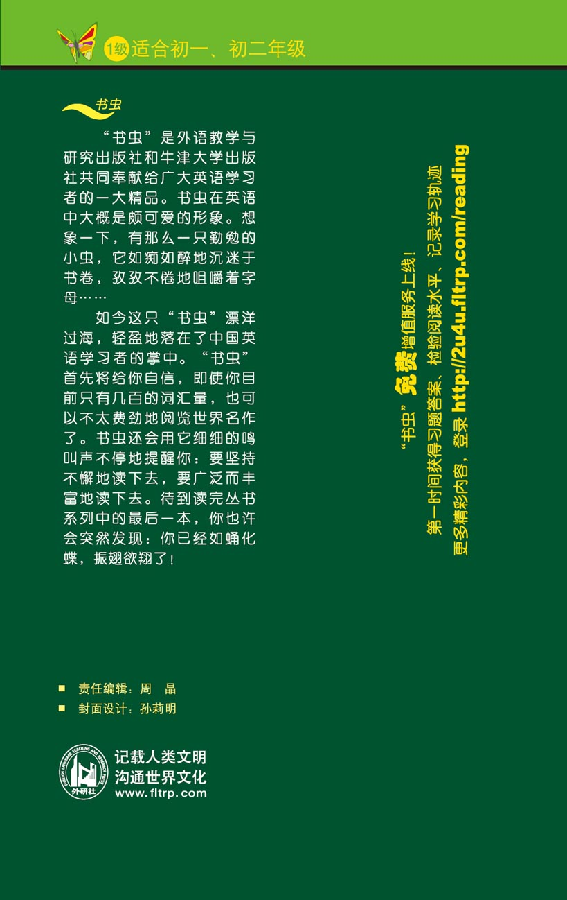